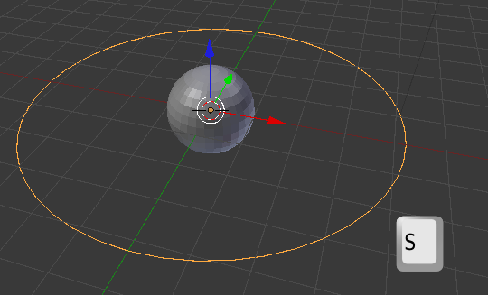
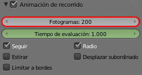
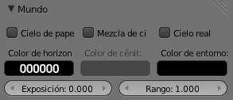
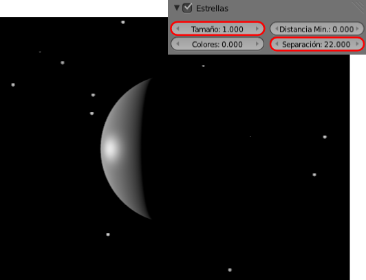
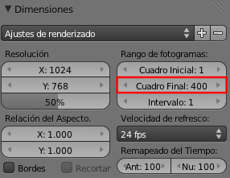

Material didáctico: Fases de la luna
Pocas experiencias pueden compararse con explicarle a un niño por qué la Luna cambia de forma.
Vamos a crear una animación para ayudar en esa explicación aunque incluye una pequeña mentira: no es la Luna la que se mueve sino la lámpara.
Sustituimos el cubo de inicio por una esfera (Añadir/Malla/Esfera UV) y aprovechando la correcta localizacion del Cursor 3D sacamos también una curva circular (Añadir/Curva/Círculo). Esta curva sale a escena con un radio igual que el de la esfera así que inmediatamente la escalamos ("S").
La escena ya cuenta con una lámpara y la vamos a utilizar para la animación. Seguimos el protocolo para que se originen los fotogramas clave con triquiñuela incluida:
- Seleccionamos primero la lámpara Puntual
 y luego el círculo.
y luego el círculo.
- Emparentamos con "Control_P"/Seguir camino. Se crean los fotogramas clave.
- Desemparentamos con "Alt_P"/Eliminar padre. Concluimos la triquiñuela.
- Eliminamos las transformaciones previas del la lámpara; en este caso Objeto/Limpiar/Posición. La lámpara se sitúa en 0.0.0 por lo que queda dentro de la esfera.
Nos resta añadir una Restricción  de tipo Seguir camino a la lámpara. No olvidaremos que es este el objeto que tiene que estar seleccionado y que la curva (BezierCircle, si no le damos otro nombre) es el Objetivo:
de tipo Seguir camino a la lámpara. No olvidaremos que es este el objeto que tiene que estar seleccionado y que la curva (BezierCircle, si no le damos otro nombre) es el Objetivo:
Seleccionamos la trayectoria y en el panel Curva cambiamos el valor de Fotogramas a 200 para que el desplazamiento de la lámpara sea más lento.

El resto son asuntos estéticos. Por ejemplo en el panel Mundo  hacemos un par de ediciones:
hacemos un par de ediciones:
- Color de horizonte. Un hexadecimal 000000.

- Estrellas. Una configuración en esta línea (la esfera ya tiene un modificador Subdivisión y un sombreado Suave en el siguiente render; no está activada la Oclusión ambiental, la única iluminación es la de la lámpara a la que se le ajusta el valor de Energía).

Nos queda definir la longitud de la animación. 400 fotogramas es una buena opción porque de ese modo vemos dos veces el ciclo completo.
Exportación (recordatorio)
Esta imagen incluye lo necesario para una buena exportación. Todo se edita en Render  .
.